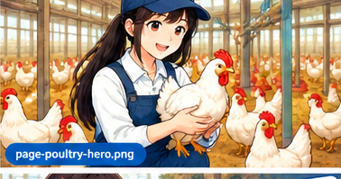

Dari gambaran pekerjaan sehari-hari, jadwal kerja, peralatan yang dipakai, sampai kosakata dan budaya kerja — semua yang perlu kamu tahu sebelum berangkat sebagai SSW peternakan ayam.

Perusahaan penempatan biasanya bergerak di salah satu dari dua jenis peternakan ini. Ritme kerjanya cukup berbeda, jadi penting untuk tahu kamu akan ditempatkan di jalur yang mana.
Fokus utama adalah produksi telur secara terus-menerus dari kandang yang sama selama masa produktif ayam (sekitar 1,5–2 tahun), jadi rutinitas hariannya berulang dan konsisten.
Fokus pada pertumbuhan ayam secepat dan seefisien mungkin dalam satu siklus (±35–50 hari), lalu kandang dikosongkan total sebelum menerima bibit (DOC) baru — disebut sistem all-in-all-out.
Ilustrasi jadwal harian umum di peternakan ayam Jepang. Waktu pasti bisa berbeda tiap perusahaan, tapi polanya mirip di kebanyakan tempat.
Cek suhu, ventilasi, sistem pakan/air otomatis, dan kondisi umum ayam — pastikan tidak ada gangguan alat semalam.
Mengambil telur dari conveyor otomatis, memeriksa telur yang tersisa manual di sudut kandang.
Ayam PetelurJeda istirahat singkat untuk sarapan bersama tim di ruang istirahat karyawan.
Semua JenisMenyortir telur berdasarkan ukuran dan kualitas, lalu mengemasnya ke tray sesuai standar sebelum dikirim.
Ayam PetelurMenimbang sampel ayam, mencatat berat rata-rata, dan mengamati gejala penyakit atau ayam yang lemas.
Ayam PedagingMemastikan feeder dan nipple drinker otomatis berfungsi baik dan tidak tersumbat, menambah stok pakan bila perlu.
Jam makan siang dan istirahat, biasanya 1 jam sebelum kembali ke pekerjaan sore.
Semua JenisMembersihkan kotoran, mengganti litter/alas kandang, dan menyemprot disinfektan sesuai jadwal biosecurity.
Semua JenisSesi kedua pengambilan telur dan pengecekan ulang produksi harian per kandang.
Ayam PetelurMencatat data harian (produksi telur/berat badan/mortalitas), memastikan ventilasi malam menyala, lalu melapor ke supervisor.
Semua JenisKandang ayam modern di Jepang banyak dibantu sistem otomatis, tapi tetap perlu dipantau setiap hari termasuk akhir pekan — jadi sistem shift dan rolling day-off tetap berlaku.
| Hari | Shift | Jam Kerja | Status |
|---|---|---|---|
| Senin | Pagi–Sore | 06:00–15:00 | Kerja |
| Selasa | Pagi–Sore | 06:00–15:00 | Kerja |
| Rabu | — | — | Libur |
| Kamis | Pagi–Sore | 06:00–15:00 | Kerja |
| Jumat | Pagi–Sore | 06:00–15:00 | Kerja |
| Sabtu | Pagi–Sore | 06:00–15:00 | Kerja |
| Minggu | Pagi saja | 06:00–10:00 | Kerja (ringan) |
Kandang ayam Jepang (closed house) umumnya sangat otomatis. Kenali dulu nama dan fungsi alatnya biar tidak kaget saat orientasi kerja.
Sistem ban berjalan otomatis yang mengangkut telur dari kandang battery/cage menuju area sortir tanpa perlu diambil manual satu per satu.
Sistem pemberian pakan dan air minum otomatis terjadwal yang mengalirkan pakan/air ke sepanjang kandang secara merata.
Exhaust fan dan cooling pad menjaga suhu serta sirkulasi udara kandang tertutup tetap stabil, krusial untuk kesehatan ayam.
Mengukur berat badan ayam secara sampel otomatis untuk memantau pertumbuhan harian, terutama penting di peternakan pedaging.
Alat semprot untuk mendisinfeksi kandang, terutama sebelum menerima bibit ayam (DOC) baru pada sistem all-in-all-out.
Mengatur durasi dan intensitas cahaya kandang secara terjadwal untuk menjaga ritme produksi telur ayam petelur tetap stabil.
Hafalkan kosakata ini dulu sebelum berangkat — akan sering kamu dengar di kandang sehari-hari.
| Jepang | Arti |
|---|---|
| 鶏舎 keisha | Kandang ayam |
| 採卵鶏 sairan-kei | Ayam petelur |
| ブロイラー buroirā | Ayam pedaging (broiler) |
| 雛（ひよこ） hiyoko | Anak ayam / DOC |
| Jepang | Arti |
|---|---|
| 採卵 sairan | Pengumpulan telur |
| 選別 senbetsu | Menyortir / seleksi kualitas |
| 給餌 kyūji | Memberi pakan |
| 換気 kanki | Ventilasi udara |
| 消毒 shōdoku | Disinfeksi |
| Jepang | Arti |
|---|---|
| 体重 taijū | Berat badan |
| 死亡率 shibō-ritsu | Tingkat kematian (mortalitas) |
| 予防接種 yobō sesshu | Vaksinasi |
| 獣医 jūi | Dokter hewan |
Gambaran percakapan sederhana antara senpai (senior/pembimbing) dan pekerja SSW baru di kandang.
Memahami budaya kerja Jepang membantumu beradaptasi lebih cepat dan membangun hubungan baik dengan rekan kerja.
Wajib ganti baju, cuci tangan, dan lewat bak disinfektan sebelum masuk kandang — aturan ini mutlak, tanpa pengecualian.
Datang 10–15 menit lebih awal dianggap standar. Jadwal pakan dan cahaya kandang otomatis, tapi pengecekan manual tetap harus tepat waktu.
Hormati senior (senpai) sebagai pembimbing. Gunakan bahasa sopan (keigo dasar) dan jangan ragu bertanya jika belum paham instruksi.
Budaya lapor-hubungi-konsultasi. Segera laporkan ayam sakit, alat rusak, atau data yang tidak biasa — jangan menunggu ditanya duluan.
Pekerjaan sortir telur dan pencatatan data menuntut ketelitian tinggi. Kesalahan kecil bisa berdampak ke kualitas produk yang dikirim.
Selalu mengikuti SOP yang sama persis setiap hari, sambil terbuka terhadap perbaikan kecil berkelanjutan (kaizen).
Persiapan ini akan membuatmu jauh lebih siap dibanding rekan lain saat hari pertama kerja.
Fokus 100–150 kosakata teknis yang paling sering dipakai (lihat bagian Kosakata di atas) sebelum belajar tata bahasa rumit.
Biasakan melakukan pekerjaan berulang dengan teliti — coba latihan menyortir barang kecil (kancing, kelereng) untuk melatih fokus.
Pelajari kenapa disinfeksi dan ganti baju kerja itu wajib — ini bukan formalitas, tapi mencegah wabah penyakit unggas.
Kandang tertutup (closed house) tetap punya bau dan debu bulu. Siapkan mental dan cari tahu soal masker/APD yang biasa dipakai.
Coba hafal dan praktikkan contoh percakapan di atas dengan teman atau mentor sampai terasa natural diucapkan.
Atur jadwal rutin video call sejak awal supaya tidak homesick berlebihan di tengah rutinitas kerja yang padat.
Pelajari materi ujian keterampilan resmi sektor peternakan sebelum berangkat.